Section II - Insulation Materials and Properties
Page 17
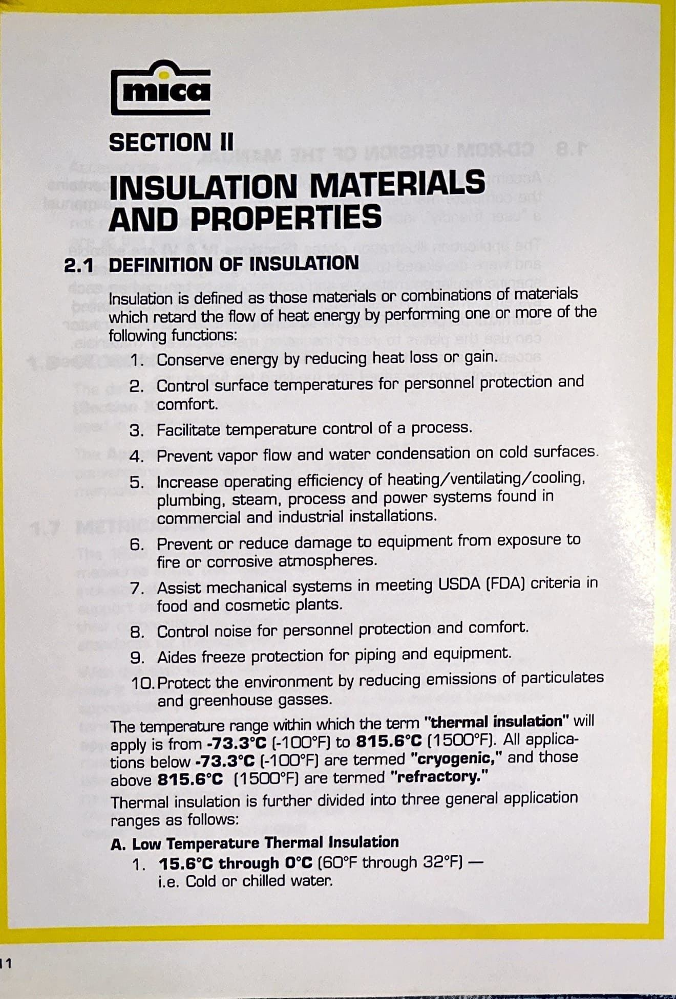
muca SECTION II INSULATION MATERIALS AND PROPERTIES 2.1 DEFINITION OF INSULATION Insulation is defined as those materials or combinations of materials which retard the flow of heat energy by performing one or more of the following functions: I.
2.
3.
4.
5.
6.
7.
8.
9.
Conserve energy by reducing heat loss or gain.
Control surface temperatures for personnel protection and comfort.
Facilitate temperature control of a process.
Prevent vapor flow and water condensation on cold surfaces.
Increase operating efficiency of heating/ventilating/cooling, plumbing, steam, process and power systems found in commercial and industrial installations.
Prevent or reduce damage to equipment from exposure to fire or corrosive atmospheres.
Assist mechanical systems in meeting USDA (FDA) criteria in food and cosmetic plants.
Control noise for personnel protection and comfort.
Aides freeze protection for piping and equipment.
IO.
Protect the environment by reducing emissions of particulates and greenhouse gasses.
The temperature range wmin which the term "thermal insulation" will apply is from -73.30C (-1 OOOF) to 815.SOC (15000F).
All applica- tions below -73.30C (-1000F) are termed "cryogenic," and those above 815.60C (15000F) are termed "refractory." Thermal insulation is further divided into three general application ranges as follows: A.
Low Temperature Thermal Insulation 1.
15.60C through OOC (600F through 320F) — i.e.
Cold or chilled water.
11
Page 18
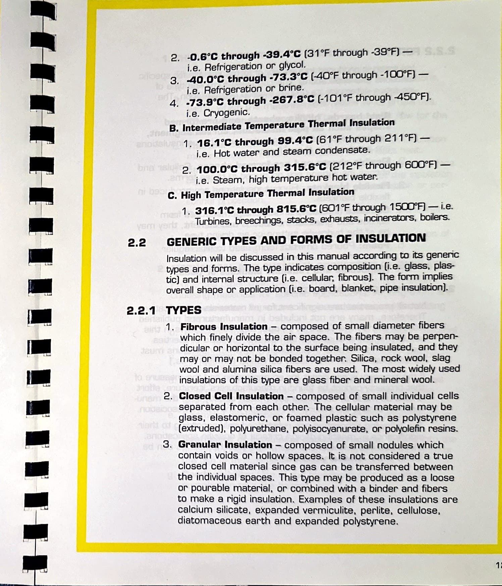
2.
3.
4.
B.
C.
-0.60C through -39.40C (310F through -390F) — i.e.
Refrigeration or glycol.
-40.OOC through -73.30C (400F through -IOOOF) — i.e.
Refrigeration or brine.
-73.90C through -267.80c (-101 OF through 4500F).
i.e.
Cryogenic.
Intermediate Temperature Thermal Insulation 1.
16.10C through 99.40C (610F through 21 IOF) — i.e.
Hot water and steam condensate.
2.
100.OOC through 315.eoc (2120F through 6000F) — i.e.
Steam, high temperature hot water.
High Temperature Thermal Insulation 1.
316.10C through 815.60C (6010Ffrough 15000B — i.e.
Turbines, breechings, sæcks, exhatßs, incinerators, boilers.
2.2 2.2.1 GENERIC TYPES AND FORMS OF INSULATION Insulation will be discussed in this manual according to its genemc types and forms.
The type indicates composition (i.e.
glass, plas- tic) and internal structure (i.e.
cellular, fibrous).
The form implies overall shape or application (i.e.
board, blanket, pipe insulation).
TYPES I.
2.
3.
Fibrous Insulation — composed of small diameter fibers which finely divide the air space.
The fibers may be perpen- dicular or horizontal to the surface being insulated, and they may or may not be bonded together.
Silica, rock wool, slag wool and alumina silica fibers are used.
The most widely used insulations of this type are glass fiber and mineral wool.
Closed Cell Insulation — composed of small individual cells separated from each other.
The cellular material may be glass, elastomeric, or foamed plastic such as polystyrene (extruded), polyurethane, polyisocyanurate.
or polyolefin resins.
Granular Insulation — composed of small nodules which contain voids or hollow spaces.
It is not considered a true closed cell material since gas can be transferred between the individual spaces.
This type may be produced as a loose or pourable material.
or combined with a binder and fibers to make a rigid insulation, Examples of these insulations are calcium silicate, expanded vermiculite.
perlite.
cellulose, diatomaceous earth and expanded polystyrene.
Page 19
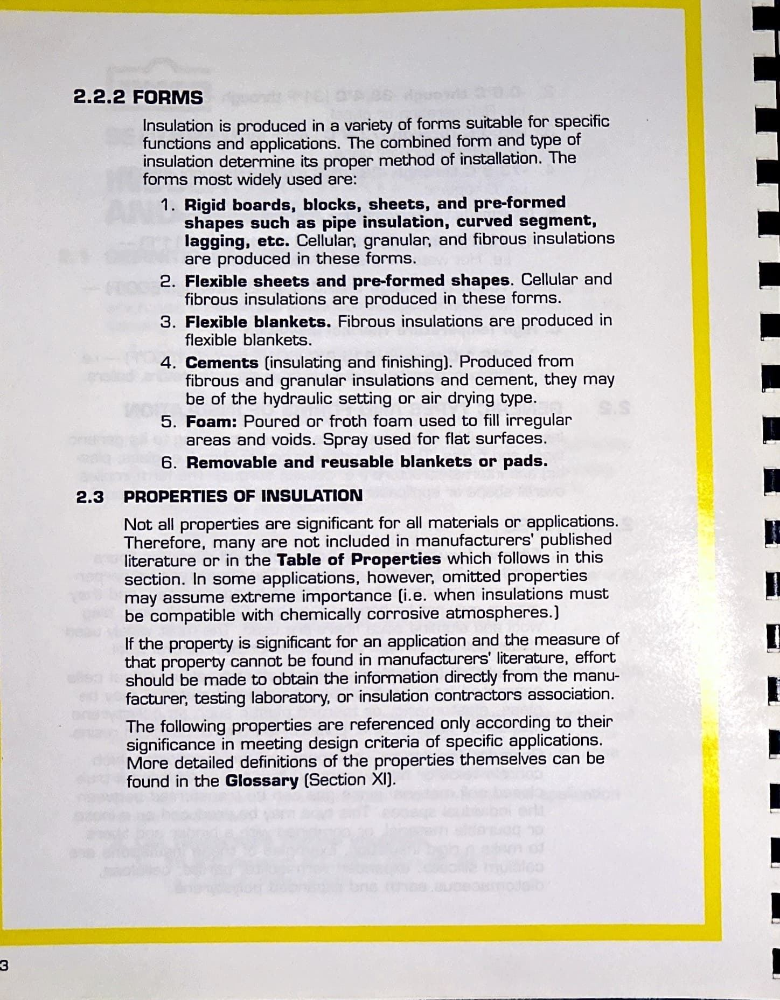
2.2.2 FORMS Insulation is produced in a variety of forms suitable for specific functions and applications.
The combined form and type of insulation determine its proper method of installation.
The forms most widely used are: 1.
2.
3.
4.
5.
6.
Rigid boards, blocks, sheets, and pre-formed shapes such as pipe insulation, curved segment, lagging, etc.
Cellular, granular.
and fibrous insulations are produced in these forms.
Flexible sheets and pre-formed shapes.
Cellular and fibrous insulations are produced in these forms.
Flexible blankets.
Fibrous insulations are produced in flexible blankets.
Cements (insulating and finishing).
Produced from fibrous and granular insulations and cement, they may be of the hydraulic setting or air drying type.
Foam: Poured or froth foam used to fill irregular areas and voids.
Spray used for flat surfaces.
Removable and reusable blankets or pads.
2.3 PROPERTIES OF INSULATION Not all properties are significant for all materials or applications.
Therefore, many are not included in manufacturers' published literature or in the Table of Properties which follows in this section.
In some applications, however, omitted properties may assume extreme importance (i.e.
when insulations must be compatible with chemically corrosive atmospheres.) If the property is significant for an application and the measure of that property cannot be found in manufacturers' literature.
effort should be made to obtain the information directly from the manu- facturer, testing laboratory, or insulation contractors association.
The following properties are referenced only according to their significance in meeting design criteria of specific applications.
More detailed definitions of the properties themselves can be found in the Glossary (Section Xl).
Page 20
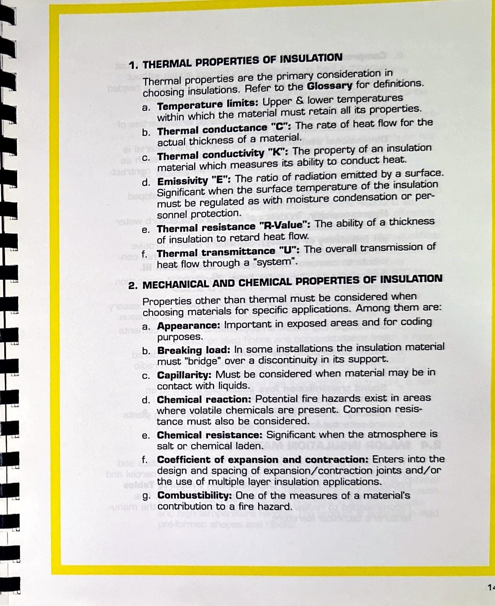
1.
THERMAL PROPERTIES OF INSULATION Thermal properties are the primary consideration in choosing insulations.
Refer to the Glossary for definitions.
a.
b.
c.
d.
e.
Temperature limits: Upper & lower temperatures within which the material must retain all its properties.
Thermal conductance "C": The rate of heat flow for the actual thickness of a material.
Thermal conductivity "K": The property of an insulation material which measures its ability to conduct heat.
Emissivity "E": The ratio of radiation emitted by a surface.
Significant when the surface temperature of the insulation must be regulated as with moisture condensation or per- sonnel protection.
Thermal resistance "R-Value": The ability of a thickness of insulation to retard heat flow.
f.
Thermal transmittance "U": The overall transmission of heat flow through a "system".
2.
MECHANICAL AND CHEMICAL PROPERTIES OF INSULATION Properties other than therrnal must be considered when choosing materials for specific applications.
Among them are: a.
Appearance: Important in exposed areas and for coding b.
c.
d.
e.
f.
g.
purposes.
Breaking load: In some installations the insulation material must "bridge" over a discontinuity in its support.
Capillarity: Must be considered when material may be in contact with liquids.
Chemical reaction: Potential fire hazards exist in areas where volatile chemicals are present.
Corrosion resis- tance must also be considered.
Chemical resistance: Significant when the atmosphere is salt or chemical laden.
Coefficient of expansion and contraction: Enters into the design and spacing of expansion/contraction joints and/or the use of multiple layer insulation applications.
Combustibility: One of the measures of a material's contribution to a fire hazard.
1
Page 21
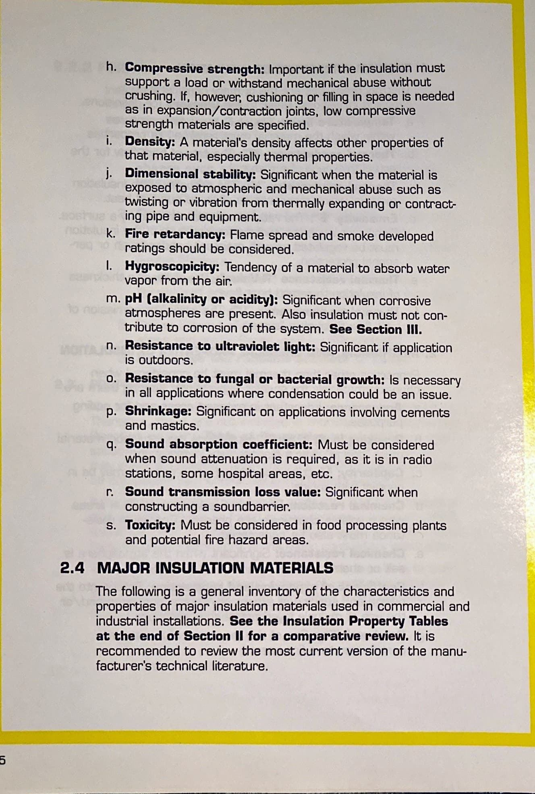
h.
j.
k.
Compressive strength: Important if the insulation must support a load or withstand mechanical abuse without crushing.
If, however, cushioning or filling in space is needed as in expansion/conü•action joints, low compressive strength materials are specified.
Density: A material's density affects other properties of that material.
especially thermal properties.
Dimensional stability: Significant when the material is exposed to atmospheric and mechanical abuse such as twisting or vibration from thermally expanding or contract- ing pipe and equipment.
Fire retardancy: Flame spread and smoke developed ratings should be considered.
Hygroscopicity: Tendency of a material to absorb water vapor from the air.
m.
pH (alkalinity or acidity): Significant when corrosive atmospheres are present.
Also insulation must not con- tribute to corrosion of the system.
See Section III.
n.
Resistance to ultraviolet light: Significant if application is outdoors.
o.
Resistance to fungal or bacterial growth: Is necessary in all applications where condensation could be an issue.
p.
Shrinkage: Significant on applications involving cements and mastics.
q.
Sound absorption coefficient: Must be considered when sound attenuation is required, as it is in radio stations, some hospital areas, etc.
r.
Sound transmission loss value: Significant when constructing a soundbarrier.
s.
Toxicity: Must be considered in food processing plants and potential fire hazard areas.
2.4 MAJOR INSULATION MATERIALS The following is a general inventory of the characteristics and properties of major insulation materials used in commercial and industrial installations.
See the Insulation Property Tables at the end of Section II for a comparative review.
It is recommended to review the most current version of the manu- facturer's technical literature.
Page 22
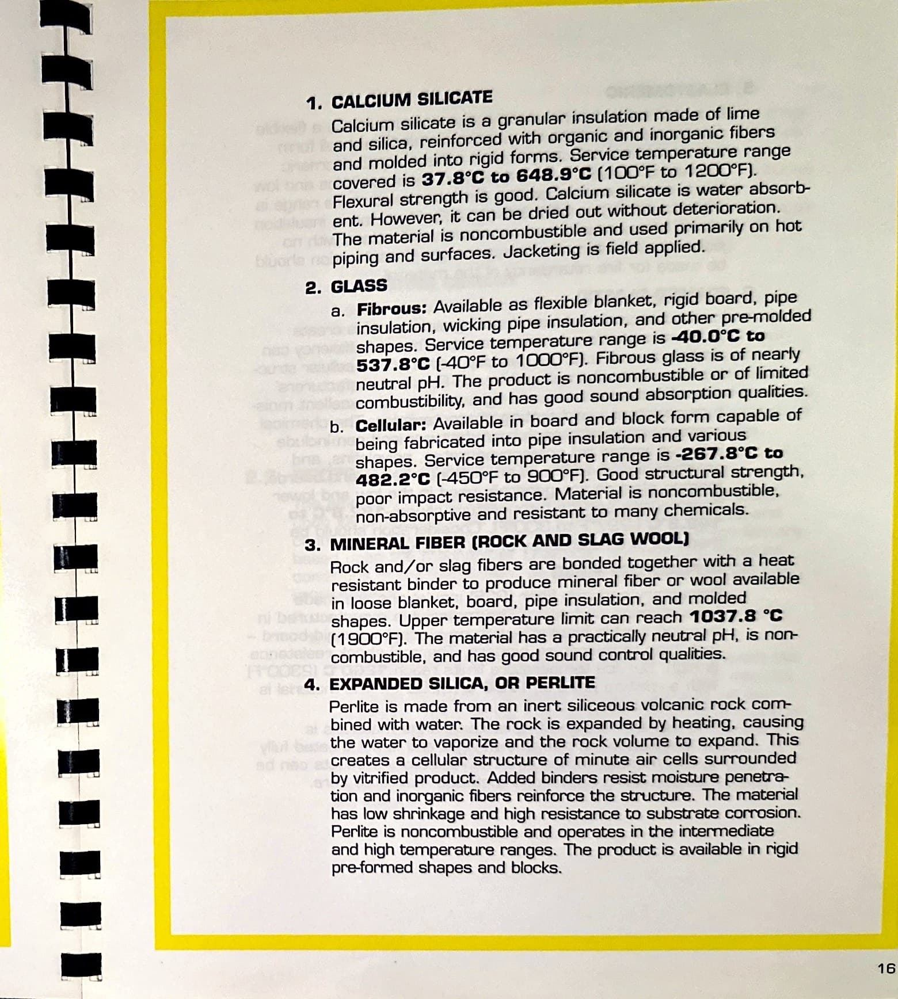
1.
CALCIUM SILICATE Calcium silicate is a granular insulation made of lime and silica, reinforced with organic and inorganic fibers and molded into rigid forms.
Service temperature range covered is 37.80C to 648.90C (IOOOF to 12000F).
Flexural strength is good.
Calcium silicate is water absorb- ent.
However, it can be dried out without deterioration.
The material is noncombustible and used primarily on hot piping and surfaces.
Jacketing is field applied.
2.
GLASS a.
Fibrous: Available as flexible blanket, rigid board, pipe b.
insulation, wicking pipe insulation, and other pre-molded shapes.
Service temperature range is 40.00C to 537.80C (400F to IOOOOF).
Fibrous glass is of nearly neutral PH.
The product is noncombustible or of limited combustibility, and has good sound absorption qualities.
Cellular: Available in board and block form capable of being fabricated into pipe insulation and various shapes.
Service temperature range is -267.80C to 482.20C (-4500F to 9000F).
Good structural strength, poor impact resistance.
Material is noncombustible, non-absorptive and resistant to many chemicals.
a.
MINERAL FIBER (ROCK AND SLAG WOOL) Rock and/or slag fibers are bonded together with a heat resistant binder to produce mineral fiber or wool available in loose blanket, board, pipe insulation, and molded shapes.
Upper temperature limit can reach 1037.8 oc (19000F).
The material has a practically neutral PH, is nor-y combustible, and has good sound control qualities.
4.
EXPANDED SILICA, OR PERLITE Perlite is made from an inert siliceous volcanic rock com- bined with water.
The rock is expanded by heating, causing the water to vaporize and the rock volume to expand.
This creates a cellular structure of minute air cells surrounded by vitrified product.
Added binders resist moisture peneü•a- tion and inorganic fibers reinforce the sü•ucture.
The material has low shrinkage and high resistance to substrate cormsion.
Perlite is noncombustible and operates in intermediate and high temperature ranges.
The product is available in rigid pre-formed shapes and blocks.
16
Page 23
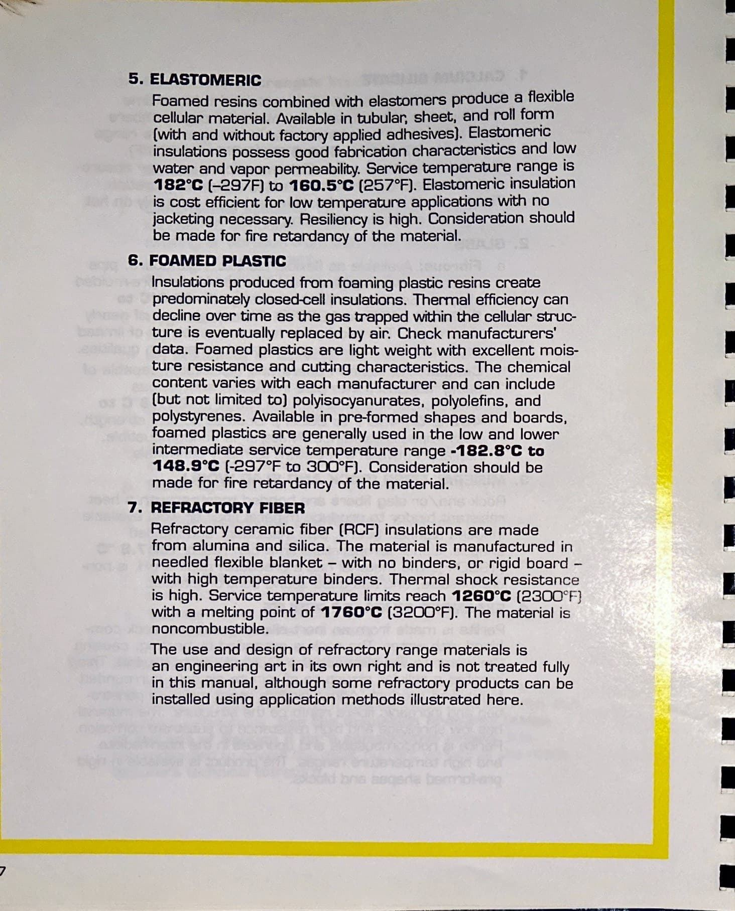
5.
ELASTOMERIC Foamed resins combined with elastomers produce a fiexibte cellular material.
Available in tubular, sheet, and roll form (with and without factory applied adhesives).
Elastomeric insulations possess good fabrication characteristics and low water and vapor permeability.
Service temperature range is 1820C (-297B to 160.50C (2570F).
Elastomeric insulation is cost efficient for low temperature applications with no jacketing necessary.
Resiliency is high.
Consideration should be made for fire retardancy of the material.
6.
FOAMED PLASTIC Insulations produced from foaming plastic resins create predominately closed-cell insulations.
Therrnal efficiency can decline over time as tie gas ü•apped within the cellular struc- ture is eventually replaced by air.
Check manufacturers' data.
Foamed plastics are light weight with excellent mois- ture resistance and cutting characteristics.
The chemical content varies with each manufacturer and can include (but not limited to) polyisocyanurates, polyolefins, and polystyrenes.
Available in pre-formed shapes and boards, foamed plastics are generally used in the low and lower intermediate service temperature range -182.80C to 148.SOC (-2970F to 3000F).
Consideration should be made for fire retardancy of the material.
7.
REFRACTORY FIBER Refractory ceramic fiber (RCF) insulations are made from alumina and silica.
The material is manufactured in needled flexible blanket — with no binders, or rigid board — with high temperature binders.
Thermal shock resistance is high.
Service temperature limits reach 12G00C (2800CF) with a melting point of 17600C (32000F).
The material is noncombustible.
The use and design of refractory range materials is an engineering art in its own right and is not treated fully in this manual, although some refractory products can be installed using application methods illustrated here.
Page 24
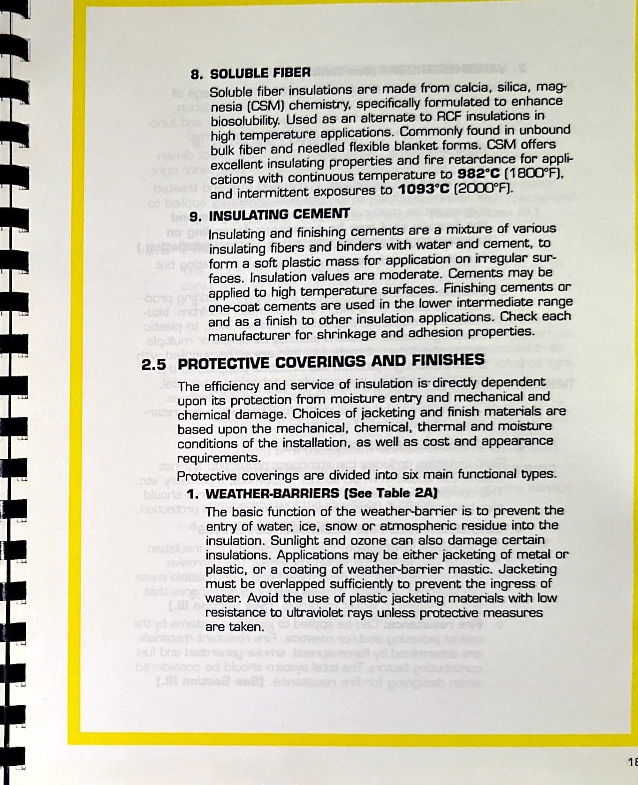
2.5 8.
SOLUBLE FIBER Soluble fiber insulations are made from calcia, silica, mag- nesia (CSM) chemistry, specifically formulated to enhance biosolubility.
Used as an alternate to RCF insulations in high temperature applications.
Commonly found in unbound bulk fiber and needled flexible blanket forms.
CSM offers excellent insulating properties and fire retardance for appli- cations with continuous temperature to 9820C (18000F), and intermittent exposures to 10930C (20000F).
9.
INSULATING CEMENT Insulating and finishing cements are a mixture of various insulating fibers and binders with water and cement, to form a soft plastic mass for application on irregular sur- faces.
Insulation values are moderate.
Cements may be applied to high temperature surfaces.
finishing cements or one-coat cements are used in the lower intermediate range and as a finish to other insulation applications.
Check each manufacturer for shrinkage and adhesion properties.
PROTECTIVE COVERINGS AND FINISHES The efficiency and service of insulation is-directly dependent upon its protection from moisture entry and mechanical and chemical damage.
Choices of jacketing and finish materials are based upon the mechanical, chemical, thermal and moisture conditions of the installation, as well as cost and appearance requirements.
Protective coverings are divided into six main functional types.
1.
WEATHER-BARRIERS (See Table 2A) The basic function of the weather-barrier is to prevent the entry of water, ice, snow or atmospheric residue into the insulation.
Sunlight and ozone can also damage certain insulations.
Applications may be either jacketing of metal or plastic, or a coating of weather-barrier mastic.
Jacketing must be overlapped sufficiently to prevent the ingress of water.
Avoid the use of plastic jacketing materials with low resistance to ultraviolet rays unless protective measures are taken.
Page 25
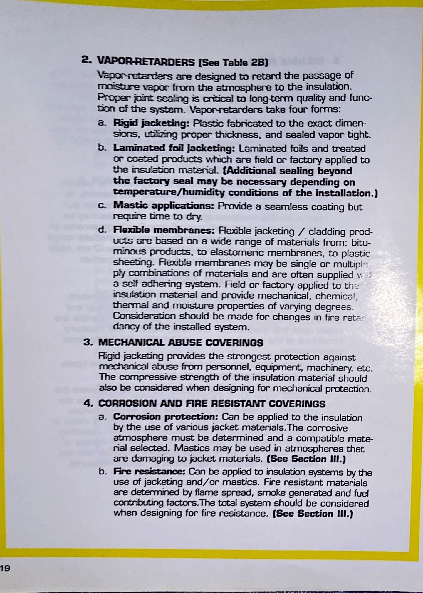
2.
VAÄR..RETARDERS (See Table 2B) are designed retard passage of GÄ.z-e vapT from tie abnosphere the insulation.
seahg is aocal to longer-rn quality and func- the %por-reärders four forms: a- ÆgZ jackeüng: Pla±c fabricaæd to tie exact dimen- Sa-s.
proper üickness, and sealed vapor tight.
b- foa jacketing: Laminaæd foils and ü•eated cnZed v.hich are field or facmry applied to heßaSon material.
(Addiüonal sealing beyond üe facmry seal may be necessary depending on temperaÄzre/humidity condiüons of the installation.) c- Massc applicaüns: Prmide a seamless coating but irne dry- d- Flexible membranes: Reme jacketing / cladding prod- are based on a vide range of materials from: bitu- rnina-s producæ, to elastomeric membranes, to plastic sheeng.
Ræcb!e membranes may be single or multiple combinaåons of materials and are often supplied a set adhering syeern- field or factory applied to th -z re-daåon rnaterial and provide mechanical, chemica!, therrnal and moisture properües of varying degrees.
Consideration should be made for changes in fire reta dancy of Ü•ue installed system.
3.
MECHANICAL ABUSE COVERINGS Rigid jacketing provides the sü-ongest protection against medEnZaJ ahuse from personnel, equipment, machinery, etc.
The compressive of the insulation material should also be considered when designing for mechanical protection.
4.
CORROSION AND FIRE RESISTANT COVERINGS a.
Corrosion protection: Can be applied to the insulation b/ tie use of various jacket materials.
The corrosive aünosphere must be deterrnined and a compatible mate- rial Mastics may be used in atmospheres that are darnaging to jacket materials.
(See Section IIL) b.
he re±tance: æn be applied to insulation systems by une use of jacketing and/or mastics.
fire resistant materials are dazmined b,' flame spread, smoke generated and fuel cormb(-mg facZcrs.The sßern should be considered vhen designing for fire resistance.
(See Section III.) 19
Page 26
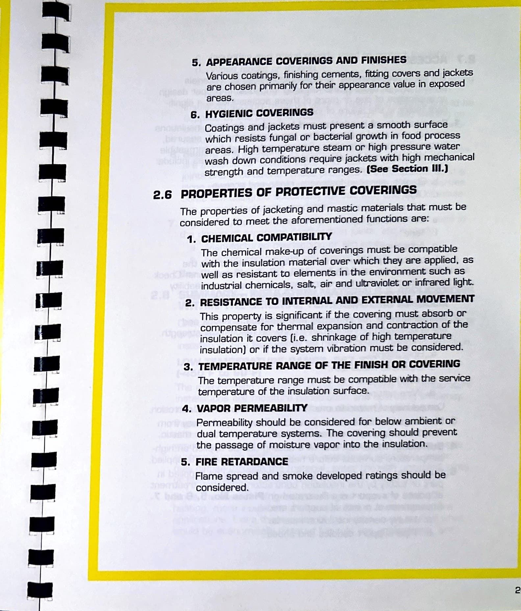
2.6 5.
APPEARANCE COVERINGS AND FINISHES Various coatings, finishing cements, frting covers and jackets are chosen primarily for uneir appearance value in exposed areas.
6.
HYGIENIC COVERINGS Coatings and jackets must present a smooth surface which resists fungal or bacterial growth in food process areas.
High temperature steam or high pressure water wash down conditions require jackets with high mechanical strength and temperature ranges.
(See Section III.) PROPERTIES OF PROTECTIVE COVERINGS The properties of jacketing and mastic materials that must be considered to meet the aforementioned functions are: 1.
CHEMICAL COMPATIBILITY The chemical make-up of coverings must be compatible with the insulation material over which they are applied, as well as resistant to elements in the environment such as industrial chemicals, salt, air and ultraviolet or infrared light.
2.
RESISTANCE TO INTERNAL AND EXTERNAL MOVEMENT This property is significant if the covering must absorb or compensate for thermal expansion and contraction of the insulation it covers (i.e.
shrinkage of high temperature insulation) or if the system vibration must be considered.
3.
TEMPERATURE RANGE OF THE FINISH OR COVERING The temperature range must be compatible with the service temperature of the insulation surface.
4.
VAPOR PERMEABILITY Permeability should be considered for below ambient or dual temperature systems.
The covering should prevent the passage of moisture vapor into the insulation.
5.
FIRE RETARDANCE Flame spread and smoke developed ratings should be considered.
Page 27
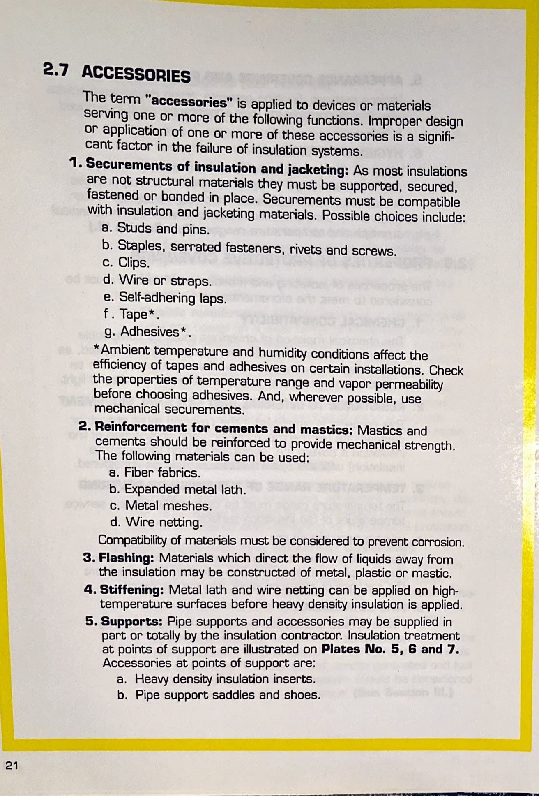
2.7 ACCESSORIES The term "accessories" is applied to devices or materials serving one or more of the following functions.
Improper design or application of one or more of these accessories is a signifi- cant factor in the failure of insulation systems.
1.
Securements of insulation and jacketing: As most insulations are not structural materials they must be supported, secured, fastened or bonded in place.
Securements must be compatible with insulation and jacketing materials.
Possible choices include: a.
Studs and pins.
b.
Staples, serrated fasteners, rivets and screws.
c.
Clips.
d.
Wire or straps.
e.
Self-adhering laps.
f.
Tape*.
g.
Adhesives* *Ambient temperature and humidity conditions affect the efficiency of tapes and adhesives on certain installations.
Check the properties of temperature range and vapor permeability before choosing adhesives.
And, wherever possible, use mechanical securements.
2.
Reinforcement for cements and mastics: Mastics and cements should be reinforced to provide mechanical strength The following materials can be used: a.
Fiber fabrics.
b.
Expanded metal lath.
c.
Metal meshes.
d.
Wire netting.
Compatibility of materials must be considered to prevent corrosion.
3.
Flashing: Materials which direct the flow of liquids away from the insulation may be constructed of metal, plastic or mastic.
4.
Stiffening: Metal lath and wire netting can be applied on high- temperature surfaces before hea',y density insulation is applied.
5.
Supports: Pipe supports and accessories may be supplied in part or totally by the insulation contractor.
Insulation treatment at points of support are illustrated on Plates No.
5, 6 and 7.
Accessories at points of support are: a.
Heavy density insulation inserts.
b.
Pipe support saddles and shoes.
21
Page 28
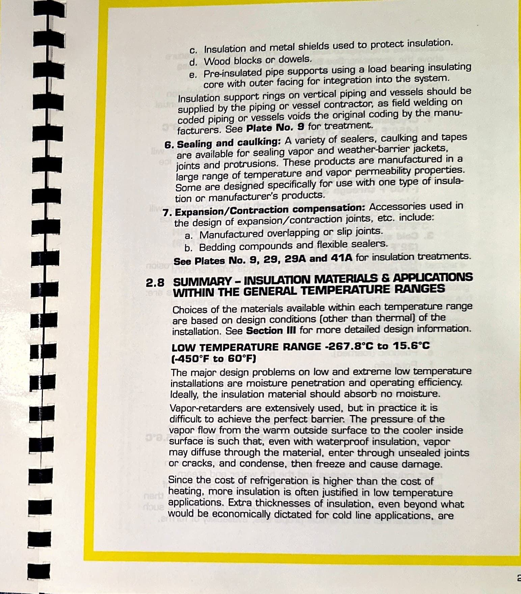
2.8 c.
Insulation and metal shields used to protect insulation.
d.
Wood blocks or dowels.
e.
Pre-insulated pipe supports using a load bearing insulating core with outer facing for integration into the system.
Insulation support rings on vertical piping and vessels should be supplied by the piping or vessel contractor, as field welding on coded piping or vessels voids the original coding by the manu- facturers.
See Plate No.
9 for treatment.
6.
Sealing and caulking: A variety of sealers, caulking and tapes are available for sealing vapor and weather-barrier jackets, joints and protrusions.
These products are manufactured in a large range of temperature and vapor permeability properties.
Some are designed specifically for use with one type of insula- tion or manufacturer's products.
7.
Expansion/Contraction compensation: Accessories used in the design of expansion/contraction joints, etc.
include: a.
Manufactured overlapping or slip joints.
b.
Bedding compounds and flexible sealers.
See Plates No.
9, 29, 2SA and 41A for insulation treatrnents.
SUMMARY - INSULATION MATERIALS & APPL.mTIONS WITHIN THE GENERAL TEMPERATURE RANGES Choices of the materials available within each temperature range are based on design conditions (other than unerrnal) of the installation.
See Section III for more detailed design information.
LOW TEMPERATURE RANGE -267.80c to 15.60C (-4500F to GOOF) The major design problems on low and extreme low temperature installations are moisture penetration and operating efficiency.
Ideally, the insulation material should absorb no moisture.
Vapor-retarders are extensively used, but in practice it is difficult to achieve the perfect barrier.
The pressure of the vapor flow from the warm outside surface to the cooler inside surface is such that, even with waterproof insulation, vapor may diffuse through the material, enter through unsealed joints or cracks, and condense, then freeze and cause damage.
Since the cost of refrigeration is higher than the cost of heating, more insulation is often justified in low temperature applications.
Extra thicknesses of insulation, even beyond what would be economically dictated for cold line applications, are
Page 29
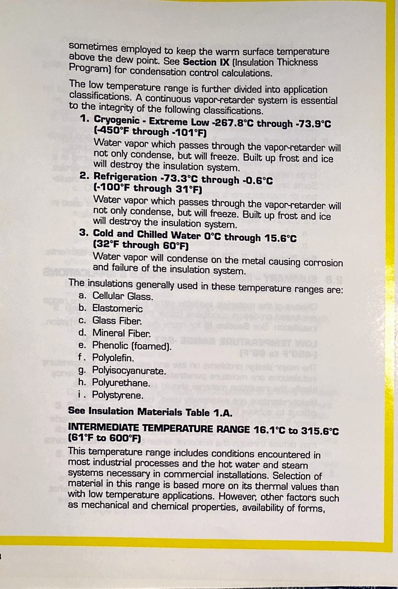
sometimes employed to keep the warm surface temperature above the dew point.
See Section IX (Insulation Thickness Program) for condensation control calculations.
The low temperature range is further divided into application classifications.
A continuous vapor-retarder system is essential to the integrity of tie following classifications.
1.
Cryogenic - Extreme Low •267.80C through •73.90C (4500F through .1010F) Water vapor which passes through the vapor-retarder will not only condense, but will freeze.
Built up frost and ice will destroy the insulation system.
2.
Refrigeration -73.30C through -0.60C (.1000F through 310F) Water vapor which passes through the vapor-retarder will not only condense, but will freeze.
Built up frost and ice will destroy the insulation system.
3.
Cold and Chilled Water OOC through 15.60C (320F through GOOF) Water vapor will condense on the metal causing corrosion and failure of the insulation system.
The insulations generally used in these temperature ranges are: a.
b.
c.
d.
e.
f.
g.
h.
Cellular Glass.
Elastomeric Glass fiber.
Mineral Fiber.
Phenolic (foamed).
Polyolefin.
Polyisocyanurate.
Polyurethane.
Polystyrene.
See Insulation Materials Table I.A.
INTERMEDIATE TEMPERATURE RANGE 16.10C to 315.60C (610F to 6000F) This temperature range includes conditions encountered in most industrial processes and the hot water and steam systems necessary in commercial installations.
Selection of material in this range is based more on its thermal values than with low temperature applications.
However, other factors such as mechanical and chemical properties, availability of forms,
Page 30
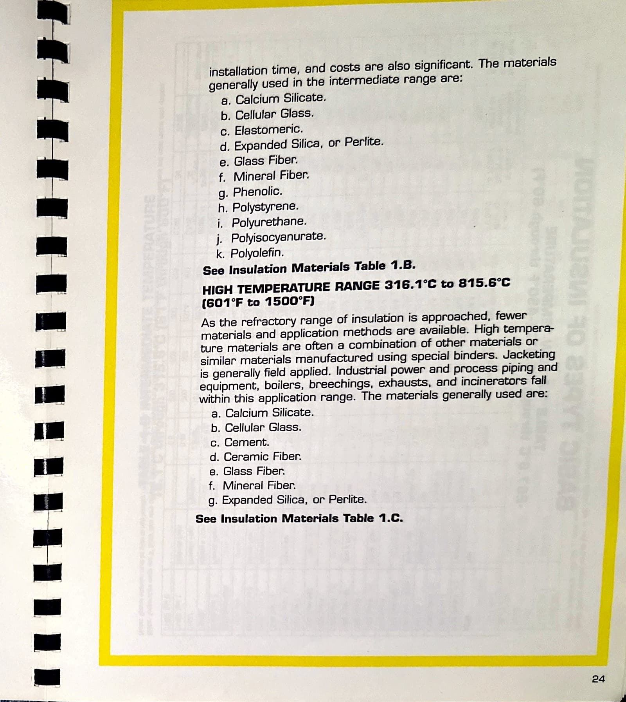
installation time, and costs are also significant.
The materials generally used in the intermediate range are: a.
Calcium Silicate.
b.
Cellular Glass.
c.
Elastomeric.
d.
Expanded Silica, or Perlite.
e.
Glass Fiber.
f.
Mineral Fiber.
g.
Phenolic.
h.
Polystyrene.
i.
Polyurethane.
j.
Polyisocyanurate.
k.
Polyolefin.
See Insulation Materials Table I.B.
HIGH TEMPERATURE RANGE 31S.vc to 815.SOC (601* to 15000F) As the refractory range of insulation is approached, fewer materials and application methods are available.
High temperæ ture materials are often a combination of other materials or similar materials manufactured using special binders.
Jacketing is generally field applied.
Industrial power and process piping and equipment, boilers, breechings, exhausts, and incinerators fall within this application range.
The materials generally used are: a.
Calcium Silicate.
b.
Cellular Glass.
c.
Cement.
d.
Ceramic Fiber.
e.
Glass Fiber.
f.
Mineral Fiber.
g.
Expanded Silica, or Perlite.
See Insulation Materials Table I.C.
24
Page 31
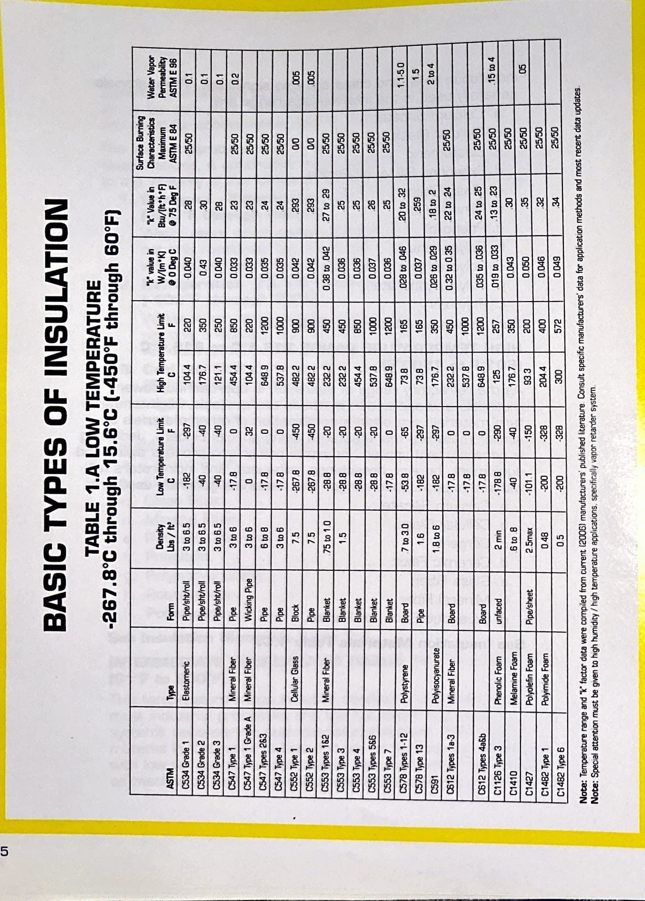
CuCU 8 88üä
Page 32
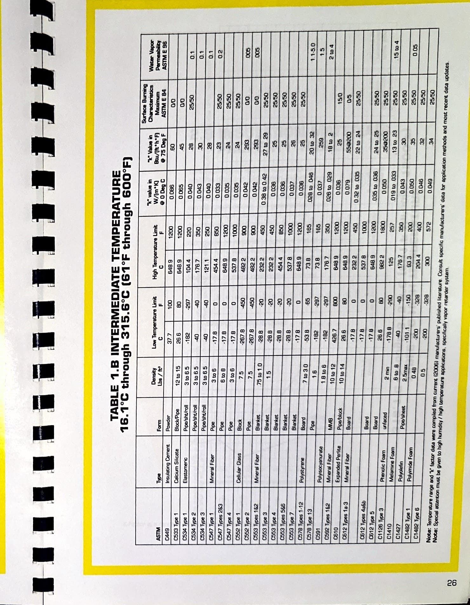
000000000 0 g ää555üü 26
Page 33
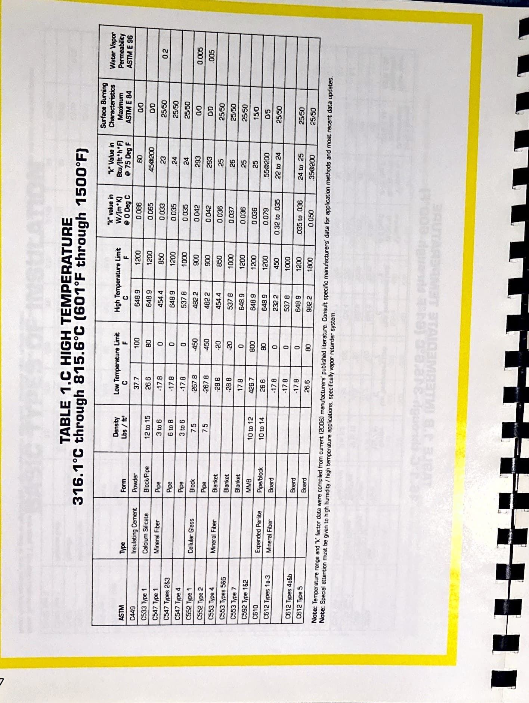
No OCR text was detected on this source page.
Page 34
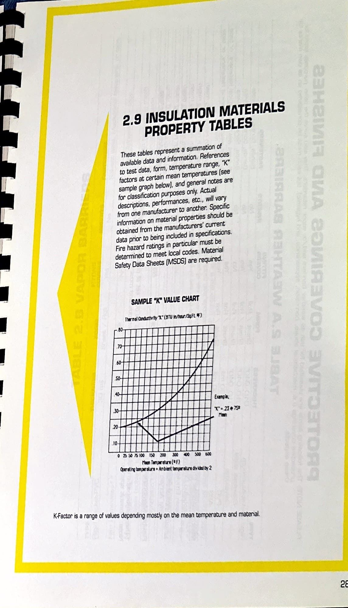
2.9 INSULATION MATERIALS PROPERTY TABLES These tables represent a summation of evadable data and Informaoon.
References to test data, form, mperature range, •K' factors at certain mean æmperatures (see sample graph below), and general notes are for classification purposes only Acmal descnpoons, performances, etc., Will vary from one manufacturer to another.
Specific information on matenal properties should be obtained from the manufacturers' cument data pnor to beng Included In specificaoons.
fire hazard ratings in particular must be determined to meet local codes.
Matenal Safety Data Sheets (MSDSJ are required.
SAMPLE •r VALUE CHART mmmuzmu KFactor is a range of values depending mostly on the mean temperature and matenal.
Page 35
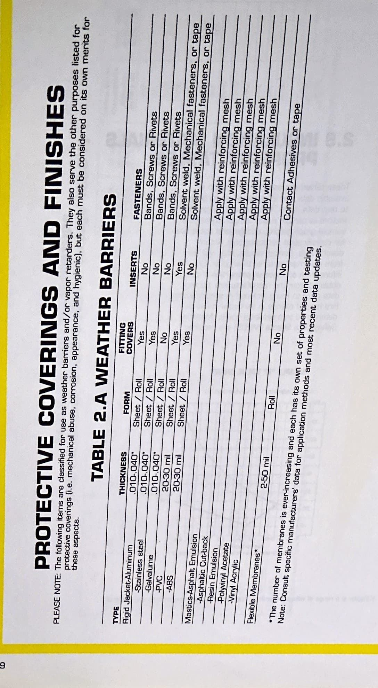
c EEE c ééé C c a.' c o E c o E c oi cc L m m 88 g tri m c C c C ;eeegg E o o q cucu
Page 36
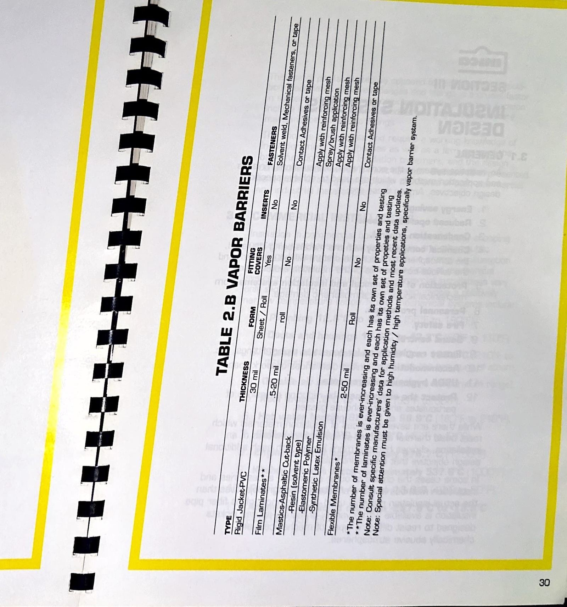
No OCR text was detected on this source page.